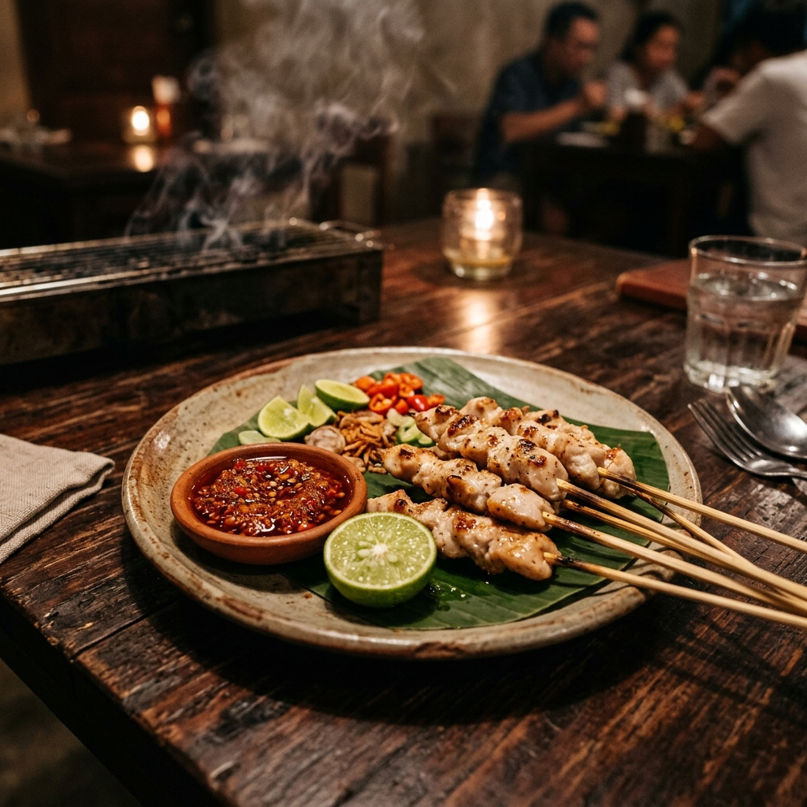
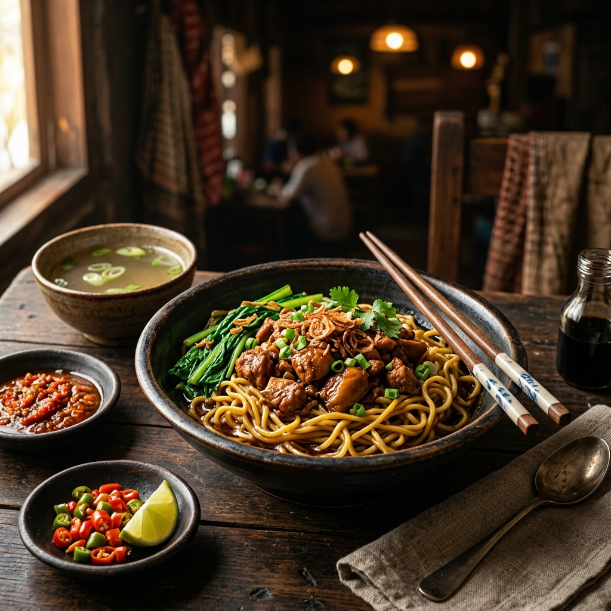

Membakar Selera, Menyajikan Kebahagiaan...
Porsi mantap, harga bersahabat, rasa nikmat tiada duanya. Cari yang enak dan bikin nagih? Ya di Belakang Tiang!


Kami sangat bersyukur dipercaya mendapatkan rating tinggi oleh para pelanggan. Kepuasan rasa adalah prioritas kami.
"Taichannya enak banget, pedasnya pas dan mie ayamnya gurih!"
"Bakmienya enak berasa gurihnya. Sate taichannya juga smokie banget. Favorit baru tempat makan deket rumah nih."
"Taichannya paling juara, kesini ga beli taichannya nyesel. Rekomendasi banget taichan & mie ayamnya."
"Taichannya berasa banget aroma bakarannya. Tempatnya juga bersih dan nyaman. Top markotop makanannya."
"Enaaaaaaaaakkk dan murmer. Porsinya banyak, harga ramah kantong, rasa juara."
"Taichannya enak banget, pedasnya pas dan mie ayamnya gurih!"
"Bakmienya enak berasa gurihnya. Sate taichannya juga smokie banget. Favorit baru tempat makan deket rumah nih."
"Taichannya paling juara, kesini ga beli taichannya nyesel. Rekomendasi banget taichan & mie ayamnya."
"Taichannya berasa banget aroma bakarannya. Tempatnya juga bersih dan nyaman. Top markotop makanannya."
"Enaaaaaaaaakkk dan murmer. Porsinya banyak, harga ramah kantong, rasa juara."
Pilih metode pemesanan yang paling mudah bagi Anda. Kami siap melayani dengan cepat baik makan di tempat, bawa pulang, atau antar langsung ke rumah Anda.